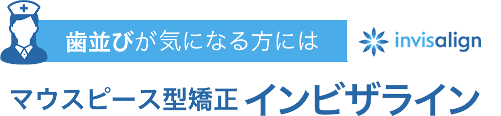
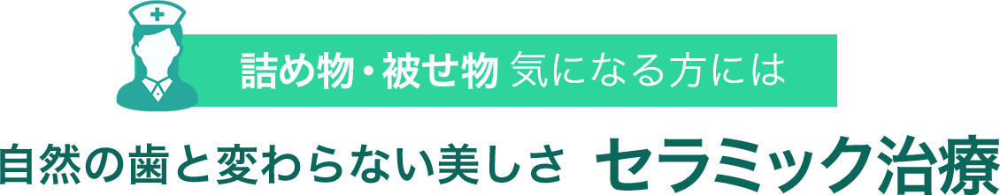
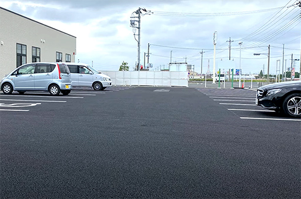

人生の大切なシーン最高の笑顔で
迎えませんか？
-
進学
-
就職・転職
-
結婚
-
独立

つけていても周りの人からほとんど気づかれない
矯正装置が透明で厚みも0.5mmほどなので、
つけていても周りの人から見えにくいのが特長です。
目立つ装置に抵抗のある方や、お仕事の都合で装置を見せられない方などに適しています。
好きなタイミングで自由に着脱できる
従来のワイヤー矯正では、一度装着すると一定期間で取り外しできませんでした。
マウスピースなら、装置のない状態での食事や歯磨き、装置自体の洗浄ができるので衛生的です。
歯型を1回採るだけ、装置の交換も自分で行なう
歯型を1回採るだけで、治療完了まで使う装置がまとめて作製されます。
約10日～2週間に1回行なう次の段階の装置への交換も自分でできるので、そのつど通院する必要がありません。
通院は、通常2～3ヵ月に1回となります。

矯正治療は、一般的な歯科治療に比べて治療期間や治療費がかかるものです。それはマウスピース型矯正も同じです。
だからこそ、後悔のないよう最初に不安や疑問を解消してから治療を受けていただきたいものです。
とりの森デンタルケアのスタッフは全員女性！
何でもお気軽にご相談ください！
当院のスタッフはすべて女性であり、女性ならではのきめ細かい
視点からの対応ができますので、治療に関する気になることは、
ご遠慮なくお話いただければと思います。
相談・カウンセリングの費用はいただいておりませんので、
お気軽にご来院ください。
マウスピース型矯正の料金 PRICE
相談、カウンセリングに費用はかかりません。月々の負担の少ないお支払い方法も選べます。
| 相談、カウンセリング | 無料 |
|---|---|
| 検診費 | 2,000円 |
| インビザライン治療費 | 850,000円 |
※上記料金以外に、お支払い時の税率で別途消費税がかかります。
※矯正治療は自費診療（保険適応外）になります。
※症状によっては、治療いたしかねる場合があります。
お支払い方法
- 現金払い
- クレジットカード
- デンタルローン
デンタルローンのお支払い例
最大84回まで分割可能、実質年率３.９％
インビザライン治療費
850,000円（税別）を
ご利用のケース
| 84回 | 毎月11,500円 （初回18,169円） |
|---|---|
| 48回 | 毎月19,100円 （初回21,700円） |
| 24回 | 毎月36,800円 （初回38,560円） |
マウスピース型矯正の流れ FLOW
-
STEP01 カウンセリング
歯並びを拝見し、症状や今後の治療の見通し、治療期間や治療費などの目安をご説明します。女性の歯科医師が、しっかりと時間をとって患者さまの訴えやご要望をお聞きし、丁寧にお答えしますので、どのようなことでもお話ください。
-
STEP02 精密検査
X線写真撮影で歯や顎骨の形状などを把握します。また、3D口腔内スキャナーを使って歯型を採ります。ペンタイプのスキャナーで歯の表面をなぞるだけで、細部まで精密に再現した歯型が採れ、パソコン画面上で確認できます。
-

STEP03 治療計画のご説明
検査結果をもとに、シミュレーションソフトを使って、インビザラインの綿密な治療計画を立案します。治療途中の歯の動きや仕上がりを3Dシミュレーションで患者さまにご確認いただき、ご理解が深まるよう丁寧にご説明します。
-
STEP04 マウスピース型装置の作製
インビザラインの設計・製造・販売を行なうアメリカのアライン・テクノロジー社に、装置を発注します。
患者さまに合わせて作成した治療計画をもとに装置が製造されます。虫歯や歯周病などは、あらかじめ治療しておきます。 -
STEP05 矯正治療スタート
初期段階では月に1回、その後は約10日～2週間に1回のペースで通院していただき、アタッチメントを装着します。1日20時間以上、食事や歯磨きのとき以外は装着してください。
治療期間の目安は1～3年です。 -
STEP06 治療完了・保定期間
すべての装置をつけ終わり、歯並びが改善したら保定期間に入ります。後戻りしないよう、約1～3年間は保定装置をつけ、歯列を安定させます。噛み合わせなどを診るので、保定期間中は約6ヵ月に1回のペースでご来院ください。
お子さまの歯並びが気になる方には 悪い歯並びの「原因」を治す MRC矯正（筋機能矯正）
マウスピースを使用！後戻りが少ない！
全身の健康効果も！
「MRC」は口腔内装置を提供するオーストラリアの会社です。同社が開発したマウスピース型の咬合誘導装置を使って子どもの口腔周囲筋を鍛え、不正咬合を早期に改善する治療法を「MRC矯正」（筋機能矯正）といいます。
この治療法を取り入れている歯科医院を「Myobrace® Member」といいます。当院もここに加盟し、お子さまの歯が生えはじめたころから、不正咬合の原因となる舌癖・口呼吸などを治し、正しい歯並びへと導いています。呼吸が改善することで健康も得られます。
人生をChange！
「気になる」歯並び、詰め物・被せ物、
お気軽にご相談ください！
不ぞろいな歯並びや銀色の被せ物がコンプレックスで、「口もとを見られたくない」「笑顔になれない」…。
そんなあなたに笑顔になっていただくため、全力でサポートします。
無料相談、
何度もカウンセリングが可能です

白く透明感のある陶材なので、金属の詰め物・被せ物の ようにお口の中で目立つことなく、美しい口もとをつくれます。白さにも種類があり、患者さまの歯に合った色調のものを選んで使うので、より自然に仕上がります。


同じ白い素材でも、保険診療のレジン（プラスチック）には吸水性があるため、劣化、着色・変色しやすくなります。
しかしセラミックは劣化しづらい素材で、プラーク（歯垢）も付きにくいため、ほとんど着色・変色しません。
金属と天然歯の硬さには差があるため、詰め物・被せ物と歯にすき間ができ、そこから虫歯を再発しがちです。
しかしセラミックと天然歯の硬さにはあまり差がなく、なじんですき間ができにくいため、虫歯の再発リスクを抑えられます。
一般的に、詰め物・被せ物などの補綴物をつくる歯科技工士は、歯科医師の作成する指示書を元に補綴物を作製するため、患者さまに直接お会いすることはありません。
とりの森デンタルケアは歯科技工士が常駐しているため、歯科技工士と連携して良質なセラミック歯を作製します！
当院には歯科技工士が常駐しているため、患者さまのお口の中を拝見し、歯並び、歯の形状・色調などを直接確認するなど、歯科医師と連携して補綴物の作製にあたれます。
そのため、患者さまにより適した美しいセラミックの人工歯へと仕上げられるのです。
前歯でも奥歯でも！ 豊富な種類から選べます
透明感のある自然な美しさ オールセラミック
すべてセラミックでできているクラウン（被せ物）です。セラミックを使ったクラウンには、金属やプラスチックなどを使ったものもありますが、透明感のある自然な色調を再現できるのは、このオールセラミックです。金属を使っていないので、金属アレルギーの方にも適しています。
ただし、衝撃に弱く破損しやすいというデメリットがあります。
| ハイクオリティtypeキャミレークラウン | 100,000円 |
|---|---|
| ハイクオリティtypeピュアパールエステティック | 85,000円 |
| ハイクオリティtypeピュアパール | 73,000円 |
| ハイクオリティtypeE-max | 73,000円 |
| レギュラーtypeジルライトクラウン | 42,000円 |
※上記料金以外に、お支払い時の税率で別途消費税がかかります。
※セラミック治療は自費診療（保険適応外）になります。
強度と審美性を両立 メタルボンド
歯の形状に合わせて作製した金属製の土台の外側に、セラミックを焼き付けたクラウンです。内側が金属なので強度に優れ、外側がセラミックなので審美性に優れているというメリットがあります。内側が金属である分、透明感には劣ります。また、経年的に歯肉が黒ずむことがあり、金属アレルギーを発症する可能性もあります。
| メタルボンド | 55,000円 |
|---|
※上記料金以外に、お支払い時の税率で別途消費税がかかります。
※セラミック治療は自費診療（保険適応外）になります。
時間をかけず気になる前歯をきれいに ラミネートべニア
矯正治療を受けるほどではないちょっとした前歯のすき間や、ホワイトニングでも白くならない前歯に、ラミネートでできた薄片を貼り付け、形状や色調を美しく整える治療です。いちばん目立つ上の前歯を、時間をかけずに美しく整えられます。
強力な専用接着剤で付けるので、取れることはありませんが、薄く歯を削る必要があります。
| ラミネートべニア | 63,000円 |
|---|
※上記料金以外に、お支払い時の税率で別途消費税がかかります。
※セラミック治療は自費診療（保険適応外）になります。
院長・医院紹介
輝く人生は口もとの美しさから
新たなライフステージへの一歩、ライフスタイルの変化…、人生には笑顔で迎えたいときが何度も訪れます。そのために欠かせないもののひとつに、口もとの美しさがあります。
歯科治療では、きちんと噛めるようにするだけなく、歯並びや歯の色を美しく仕上げることも大切です。コンプレックスから解放され、笑顔を見せられるようになることで、QOL（Quality of Life=生活の質）が向上し、心が豊かになります。それが「人生をチェンジ！」につながるといっても、過言ではありません。
また、お口の健康が全身の健康につながることから、私たちは常に、皆さまのお口を健康な状態に導きたいと願っております。「とりの森デンタルケア」を、まちの健“⼝”ステーションとしてご利用いただけますと幸いです。
「お口の美と健康を両立したい」という方はぜひお気軽にご相談ください。皆さまがさらに輝けるようサポートさせていただきます。スタッフ⼀同、皆さまのご来院を⼼よりお待ちしております。
- とりの森デンタルケア院長
- 古室 あづさ
経歴
-
- 1995年
- 国立新潟大学歯学部卒
-
- 1995年～1999年
- さいとう小児歯科 勤務
-
- 2000年～2006年
- 古室歯科クリニック 勤務
-
- 2007年～2008年
- カンダデンタル・けやきウォーク 勤務
-
- 2009年
- 埼玉県内の歯科医院勤務を経て、同年森下歯科医院を継承
所属団体
- 日本小児歯科学会会員
- 日本病巣疾患研究会会員
- 赤ちゃん歯科ネットワーク会員
- 日本口育協会会員
- 保護司
とりの森デンタルケアって
こんなところ！
ABOUT CLINIC
-
スタッフは全員女性
受付・予約・カウンセリングを丁寧に行なうだけでなく、ご家族の方の治療中にお子さまを見たり、妊娠中のお母さまの支えになったり、体調がすぐれない方の介助をするなど、女性ならではのきめ細かな対応を心がけています。
-
2020年フルリニューアル
医院名を所在地「鳥山」の「とり」、「旧 森下歯科医院」の「森」から「とりの森デンタルケア」に改め、移転し、フルリニューアルしました。医院だけでなく駐車場も広くなり、快適に通院していただける環境となっています。
-
基準を満たした滅菌対策
器具は使うたびに高圧蒸気滅菌器で滅菌し、エプロンや紙コップは使い捨てにするなど感染予防対策を徹底していることから、厚生労働大臣が定めた歯科外来診療環境体制（外来環）の施設基準を満たした医院として認められています。
-
除菌水
院内感染対策の一環として、水を中性電解水（除菌水）に変える装置を導入し、院内で使うすべての水を清潔に保っています。除菌水が循環するので、給水管に潜む細菌の繁殖を薬品などを一切使わず抑制できます。
-

医療施設用空気清浄装置
市販の置き型空気清浄機の7～10倍の効果があり、0.01µmの微細な粒子まで吸引します。空気中のウイルス、細菌、ダニ、花粉、ほこりなどの汚染物質や、気になるにおいを速やかに取り除き、清潔な空間を保ちます。
-
3D口腔内スキャナー
従来のシリコンを使った型採りは、固まるまで口を開けて待つ必要がありましたが、3D口腔内スキャナーは、小型のスキャナーで歯の表面をなぞるだけで精密な歯型が採れ、すぐに確認できるので、診療の短縮につながります。
-
キッズルーム・授乳室
ご家族の方の診療が終わるまで、お子さまはキッズルームで遊びながら退屈せずお待ちいただけます。授乳室もあるので、赤ちゃんがぐずったときなどすぐにご利用いただけます。お子さま連れの方も安心してご来院いただけます。
-
ピーリングマシン
FDA（アメリカ食品医薬品局）で認可されている医療機関専用のピーリングマシンです。余分な皮脂や角質、汚れ、しみやくすみなど取り除きながらお肌に潤いと栄養分を与え、みずみずしい素肌へと導きます。
-
ミュゼホワイトニング
加盟歯科医院「ミュゼホワイトニング」に加盟しているので、痛みが抑えられ、飲食制限のないホワイトニング、「ポリリンホワイトニング」をご提供できます。透明感とツヤのある自然な仕上がりになる、メリットの多いホワイトニングです。
-

駐車場27台分完備
2020年のフルリニューアルにともない、駐車場も広くなりました。27台とめられるので、患者さまがたくさんいらっしゃる曜日や時間帯などでも、余裕をもって駐車していただけます。
医院情報 CLINIC INFORMATION
群馬県太田市烏山中町271-1
東武桐生線「三枚橋駅」より徒歩12分
＜専用駐車場27台完備＞
| 受付時間 | 月 | 火 | 水 | 木 | 金 | 土 | 日・祝 |
|---|---|---|---|---|---|---|---|
| 09:00 〜 11:50 | ● | ● | ● | 休 | ● | ▲ | 休 |
| 14:00 〜 18:00 | ● | ● | ● | 休 | ● | ▲ | 休 |
| 受付時間 | 9：00～13：00 | 14：30～19：00 |
|---|---|---|
| 月 | ● | ● |
| 火 | ● | ● |
| 水 | ● | ● |
| 木 | 休 | 休 |
| 金 | ● | ● |
| 土 | ▲ | ▲ |
| 日・祝 | 休 | 休 |
▲ … 土曜日は9:00-16:00の受付です
[休診日] ⽊曜⽇・⽇曜⽇・祝⽇・年末年始・お盆
薬機法において
承認されていない医療機器について
当院でご提供しているマウスピース型矯正装置を用いた治療は、「インビザライン・システム」というもので、この治療法で使用するマウスピース型矯正装置を「インビザライン」といいいます。
これは薬機法（医薬品医療機器等法）においてまだ承認されていない装置となりますが、当院ではその有効性を認め、導入しています。
- 【未承認医薬品等に該当】
- 「インビザライン」は、薬機法での承認を得ていません。
- 【入手経路等】
- マウスピース型矯正装置「インビザライン」は、アメリカのアライン・テクノロジー社が開発・製造・販売している製品です。当院ではこの治療システムを、アライン・テクノロジー・ジャパン株式会社を通じて入手・利用しています。
- 【国内の承認医薬品等の有無】
- マウスピース型矯正装置は複数の企業で開発されており、さまざまな種類があります。日本国内でもインビザラインと同様の形態のマウスピース型矯正装置が販売されており、そのいくつかは国内で薬事承認されています。
日本で「医療機器としての矯正装置」と認められるためには、「薬事承認されている材料を使用したもの」「日本の国家資格をもつ歯科医師または歯科技工士が作製したもの」「薬事承認された既製品」でなければなりません。
「インビザライン」の設計は日本国内で歯科医師や歯科技工士が行ないますが、作製は海外でロボットが行なうため、薬機法の対象とはなりません。したがって、日本では「医療機器としての矯正装置」とは認められていません。
- 【諸外国における安全性等にかかわる情報】
- インビザライン・システムは、全世界で800万以上（2020年1月現在）の患者さまが受けられている治療法です。歯科矯正が潜在的にもつリスク・副作用以外の重篤な副作用の報告はありません。
日本では薬機法未承認の装置であり、医薬品副作用被害救済制度の対象外となる場合があります。